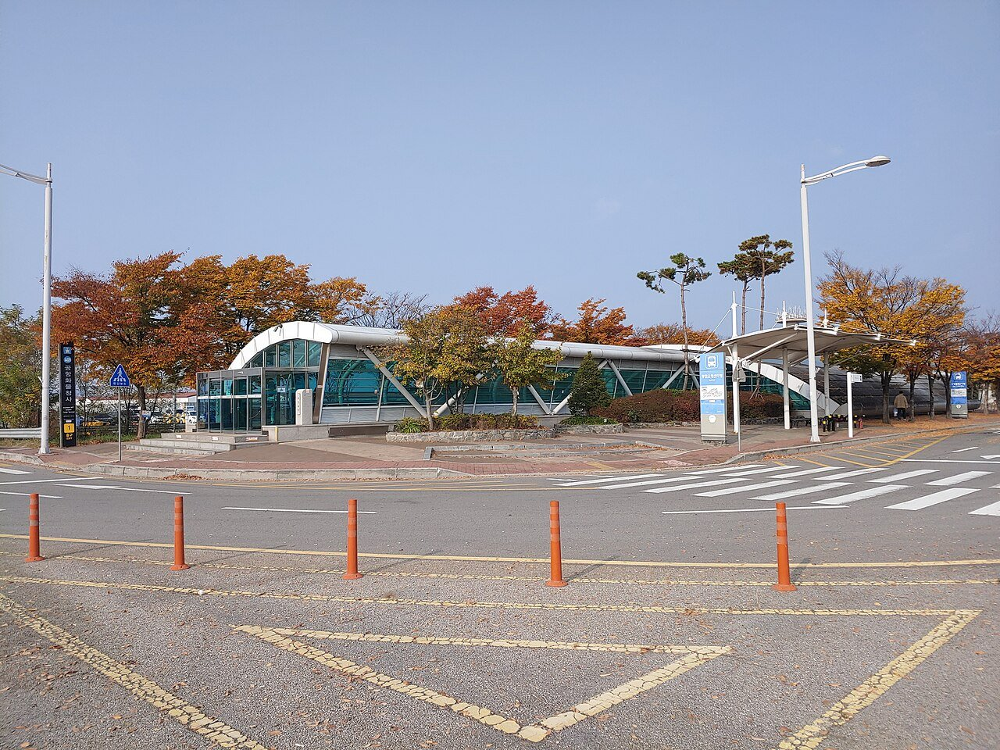
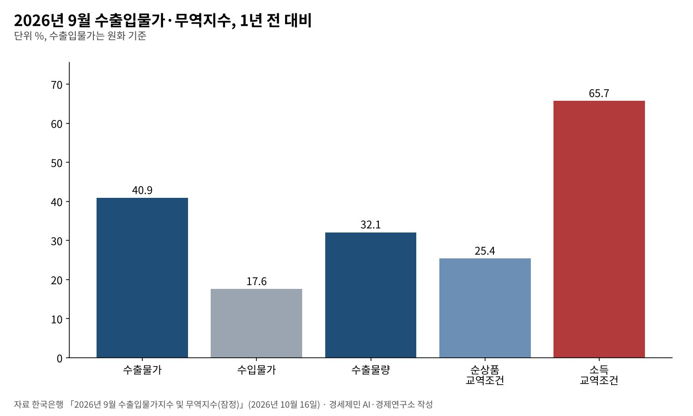
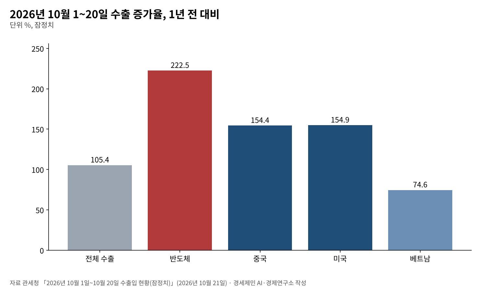

[경세제민] 반도체 글로벌가치사슬과 인천국제공항, 값이 무게를 이기는 시대
10월 1~20일 반도체 수출 222.5% 증가, 9월 수출물가 40.9% 올라 값이 물량을 앞질러
인천국제공항 2025년 화물 295만4684톤, 4단계 확장으로 시간당 운항 107회
미국이 설계하고 타이완이 만들고 한국이 기억을 담는다, 5단계 확장의 시간표는 아직
한국 수출이 반도체에 실려 날아오른다. 관세청 잠정치로 10월 1~20일 수출은 616억달러로 1년 전보다 105.4% 늘었다. 반도체는 222.5% 늘었다. 하루 평균 수출액 47억4000만달러는 역대 최대다.
반도체는 하늘길로 나가는 대표 화물이다. 작고 가볍지만 비싸고, 습기와 충격에 약해 빨리 옮겨야 한다. 인천국제공항은 반도체 글로벌가치사슬(GVC)의 관문이자 나라의 전략 기반시설이다.
값이 무게를 이기는 시대에 공항의 경쟁력은 톤수가 아니라 운항 편수와 속도에서 나온다. 반도체 사슬 속 한국의 자리, 그 이익의 배분, 공항 확장의 시간표를 함께 짚는다.

1. 무게보다 값, 숫자가 말하는 반도체 화물
한국은행 집계로 9월 수출물가는 원화 기준으로 1년 전보다 40.9% 올랐다. 수출물량지수는 32.1% 늘었다. 값이 물량보다 빨리 오르며 수출 금액을 끌어올린 셈이다.
순상품교역조건지수는 25.4% 좋아졌다. 수출품 한 단위로 살 수 있는 수입품이 그만큼 늘었다는 뜻이다. 물량과 교역조건을 함께 반영한 소득교역조건지수는 65.7% 올랐다.
재정경제부 집계로 9월 수출은 83.5% 늘었고 무역수지는 498억5000만달러 흑자다. 반도체와 컴퓨터가 앞장섰다. 무게로 재면 작은 화물이 금액으로는 수출 실적을 좌우하는 구조다.

2. 인천국제공항, 편수가 경쟁력이다
인천국제공항공사 통계로 2025년 화물은 295만4684톤, 여객은 7407만1475명이다. 공항 화물의 값은 무게만으로 드러나지 않는다. 같은 톤수라도 반도체 비중이 커지면 실어 나르는 가치가 커진다.
반도체는 전용 화물기에만 실리지 않는다. 여객기 아래칸 화물칸도 중요한 통로다. 여객이 늘면 여객기 운항이 늘고, 실을 수 있는 화물 공간도 는다. 여객과 반도체 물류는 떼어 볼 수 없다.
공항은 2024년 12월 3일 4단계 확장을 마쳤다. 활주로는 4개이고, 시간당 운항 능력은 90회에서 107회로 늘었다. 고가 화물의 경쟁력은 얼마나 자주, 얼마나 빨리 띄우느냐에서 나온다.
3. 미국이 설계하고 타이완이 만들고 한국이 기억을 담는다
인공지능 반도체 하나에는 여러 나라가 들어간다. 미국 기업이 그래픽처리장치를 설계하고, 타이완 TSMC가 연산 칩을 만들어 메모리와 붙인다. 한국은 고대역폭메모리(HBM)를 쌓아 공급한다.
트렌드포스 집계로 2분기 파운드리 시장에서 TSMC 점유율은 72.5%다. D램 매출 점유율은 삼성전자 39.4%, SK하이닉스 24.9%로 두 회사가 64.3%를 차지한다. 기억을 담는 고리에서 한국은 빠질 수 없다.
트렌드포스는 삼성전자가 HBM4를 먼저 대량 생산하고 출하했다고 봤다. SK하이닉스는 출하에서 HBM 비중이 가장 높다. 이 칩들이 인천의 화물터미널을 거쳐 세계의 데이터센터로 간다.
4. 사상 최대 이익, 노동자의 몫은
반도체 호황은 기업 이익을 키웠다. 트렌드포스 집계로 2분기 D램 업계 매출은 1547억3000만달러로 한 분기 만에 59.5% 늘었다. 삼성전자 D램 매출만 609억8000만달러다.
일자리의 속도는 다르다. 재정경제부는 9월 취업자가 11만3000명 늘어 증가 폭이 줄었다고 밝혔다. 취약계층의 고용 여건 악화를 부담 요인으로 꼽았다. 값으로 버는 호황은 일자리를 크게 늘리지 않는다.
교역조건 개선이 만든 소득은 먼저 기업과 주주에게 간다. 성과급과 임금, 협력업체 단가, 지역 일자리로 얼마나 흘러가느냐가 호황의 질을 정한다. 반도체 공장 노동자와 공항 물류 노동자도 그 사슬의 일부다(연구소 판단).

5. 미중 사이, 양쪽에 필요한 나라
관세청 잠정치로 10월 1~20일 대중국 수출은 154.4%, 대미국 수출은 154.9% 늘었다. 한국은 두 강대국 모두에 반도체를 파는 나라다. 양쪽 모두에게 필요한 나라라는 것이 한국의 협상력이다.
미국은 선을 긋되 움직인다. 미국 상무부 산업안보국은 2025년 8월 외국 기업 중국 공장의 장비 반입 특례를 없앴다. 올해 1월에는 엔비디아 H200 같은 칩의 중국 수출을 사안별로 심사하겠다고 했다.
이런 환경에서 인천국제공항은 특정 진영의 기지가 아니라 열린 관문이어야 한다. 어느 쪽 수요든 빠르고 믿을 수 있게 실어 나르는 능력이 균형 외교를 받치는 물적 기반이다(연구소 판단).
6. 5단계 확장, 시간표가 필요하다
공항 건설에는 계획에서 완공까지 오랜 시간이 걸린다. 4단계 확장도 활주로와 터미널을 함께 늘리는 데 여러 해가 걸렸다. 수요가 차오른 뒤에 짓기 시작하면 늦는다.
제5활주로와 제3여객터미널은 장기 구상으로 거론돼 왔다. 그러나 이번에 확인한 공개 자료로는 사업 범위와 일정이 확정됐는지 알 수 없었다. 확정 계획과 재원 계획을 국민 앞에 내놓아야 할 때다.
반도체는 한국 경제의 엔진이고, 인천국제공항은 그 엔진의 배기구다. 값이 무게를 이기는 시대에 편수와 속도는 국가 경쟁력이다. 그 경쟁력의 이익이 노동자와 지역으로 고루 흐를 때 호황은 오래간다.
참고문헌
기관 자료
- 관세청(재정경제부 게재), 「2026년 10월 1일 ~ 10월 20일 수출입 현황(잠정치)」, 2026년 10월 21일, KDI 경제교육·정보센터 게재. https://eiec.kdi.re.kr/policy/materialView.do?num=288360
- 한국은행 경제통계1국, 「2026년 9월 수출입물가지수 및 무역지수(잠정)」, 2026년 10월 16일, KDI 경제교육·정보센터 게재. https://eiec.kdi.re.kr/policy/materialView.do?num=288195
- 재정경제부 경제정책국, 「2026년 10월 최근 경제동향」, 2026년 10월 16일, KDI 경제교육·정보센터 게재. https://eiec.kdi.re.kr/policy/materialView.do?num=288176
- 미국 상무부 산업안보국(BIS), 보도자료 목록(2025년 8월 29일 VEU 종료, 2026년 1월 13일 중국 수출 허가 심사 방침). https://www.bis.gov/news-updates
연구 논문과 보고서
- TrendForce, "Global Foundry Revenue Approaches US$53.49 Billion in 2Q26 as SMIC Narrows Market Share Gap with Samsung", 2026년 9월 9일. https://www.trendforce.com/presscenter/news/20260909-13225.html
- TrendForce, "DRAM Industry Revenue Rises 59.5% QoQ in 2Q26 as Supply Expansion Continues to Lag Demand Growth", 2026년 9월 7일. https://www.trendforce.com/presscenter/news/20260907-13219.html
- Wikipedia, "Incheon International Airport"(인천국제공항공사 통계표 인용: 2025년 화물·여객, 4단계 완공일, 시간당 운항 능력). https://en.wikipedia.org/wiki/Incheon_International_Airport
언론 보도
- (이번 회차에 새로 인용한 언론 보도 없음)
[사진 출처]
- [사진1] IRTC1015, "AREX-Incheon International Airport Cargo Terminal Stn-Exterior-2.jpg", 위키미디어 공용, 퍼블릭 도메인. https://commons.wikimedia.org/wiki/File:AREX-Incheon_International_Airport_Cargo_Terminal_Stn-Exterior-2.jpg
※ 이 기사는 AI 프로그램 클로드를 활용해 작성했습니다.
관련기사
- [경세제민] 반도체 애치슨 라인, 한국은 어디에 서 있나
- [경세제민] 엉터리 경제학, 공급 대책을 거듭 내놔도 집값 기대는 왜 꺾이지 않나
- [경세제민] AI 대전환 시대, 인천항만 업계 포용적 성장 방안
- [서평] 슘페터 『경제분석의 역사』 1권, 300년 전 질문이 오늘도 유효하다
저작권자 © AI경세제민 무단전재 및 재배포, AI학습 및 활용 금지